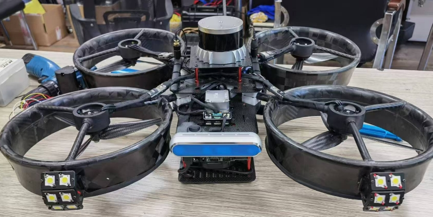

[project]搭载于密闭环境检测无人机的环境数据采集与上报模块
📅 2024-08-28
🔄 2024-08-28
⌚ Reading time: 6 min
0. 介绍
这是一个物联网项目，合作公司的主要业务是使用无人机进行密闭环境的无人检测，如船舶、大型锅炉、化工厂储罐等内部观察检测。该项目需要开发一套用于密闭环境近观检测的无人机系统，涵盖硬件设计、软件开发与系统集成。该系统由无人机端、地面监控端和数据传输与系留供电模块组成，专门用于密闭空间内的精细检测任务。无人机端搭载高清相机、飞控系统，以及一个基于 STM32F407 的环境数据采集与上报模块。该模块通过外挂的 W5500 芯片与无人机局域网内的机载工控机进行通信，采用 UDP 协议实现数据传输。
我负责环境数据采集与上报模块的所有软件功能开发。
1. 硬件方案

此项目我不负责硬件设计部分，但这里也简单介绍一下硬件方案。
- 主控芯片：STM32F407VET6
- 网络芯片：W5500
W5500(datasheet)是一款全硬件 TCP/IP 协议栈以太网控制器，内部集成了以太网数据链路层（MAC）和以太网物理层（PHY），内嵌的 8 个独立硬件 Socket 可以进行 8 路独立通信。使用标准 4 线 SPI 接口与主机进行通信。
传感器部分
- 1 个高精度温度传感器 MCP9808
- IIC 接口
- 2 个电化学可燃气体浓度传感器
- UART 接口
- 3 个 ToF 距离传感器
- IIC 接口
此外，还有共 20 个 GPIO 用来控制灯光、电源的开关。
| 激光测距传感器 | 可燃气体浓度传感器 | 高精度温度传感器 |
|---|---|---|
 |
 |
2. 软件开发情况总体介绍
RTOS 选择: rt-thread
在软件开发上，考虑到此模块外接的设备较多并且需要网络协议栈，裸机开发可能会比较棘手，因此基于 RTOS 完成开发。
比较常用的 RTOS 是 freeRTOS ，我学习的第一个是 rt-thread，rtt 除了实时内核，对设备驱动也做了抽象，有更易调用的方法和软件包，因此基于 rt-thread 开发该模块的软件。我看过一些 freeRTOS 项目的源码，外设驱动大多是和裸机操作一样基于 HAL 库来完成。rtt 设计一套统一的 api ，和 linux 类似使用 open close read write 来操作设备，此外我更喜欢 rtt 源码风格，其和 linux 风格类似使用全小写+_的方式。
软件开发流程
rtt 可以使用 Keil、IAR、RT-Thread Studio、makefile 来开发，我使用 Keil 来开发。整个软件的开发流程
BSP 开发 ---> 传感器驱动开发 -> 传感器驱动测试 ---> 业务功能开发 -> 业务功能测试 -> 整机测试 -> 生产环境测试
\--> 网络通信功能开发 -> 网络通信功能测试 -/
rt-thread 现在也比较成熟了，对 arm cortex-m 内核、STM32 系列支持的都挺好，不需要做 kernel 的移植和外设驱动的开发了。但是这个板是自己设计的，因此还是要做一下板级适配，需要适配的地方也不多，参考官方说明文档关于 BSP 开发的部分
- 链接脚本和
board.h中，指定 RAM 和 ROM 的大小 - 使用 CubeMX 配置时钟和引脚复用
- 添加要使用的外设的 Kconfig 选项
- 适配项目构建脚本和工程配置模板
rtt 的 BSP 相比于 linux 还是要简单的多，rtt 在一些设计上借鉴了 linux，比如说使用 Kconfig 来配置内核编译选项，使用 menuconfig 工具来配置需要使用的外设，这也使得熟悉 rtt 后上手 linux 也会更容易一些。
BSP 准备好以后，下载到目标板，msh 就能看到输出内容了，一些交互指令也可以使用了。后面的网络通信功能和传感器驱动开发可以并行进行。
业务功能实现方式
此项目业务功能并不复杂，读各个传感器的数据然后通过网络发送就可以了。采用了多线程完成，每个线程负责不同传感器的数据采集或设备控制。所有数据和指令存储在一个全局的数据结构体中，通过各线程的读写实现了高效的数据通信。UDP 通信分为发送和接收两个线程，使用两个端口进行数据交互，简化了程序设计，并确保了实时数据的可靠传输。
/*-------------------- 电源状态 -------------------*/
typedef enum {
POWER_OFF = 0,
POWER_ON,
} power_status_t;
typedef struct {
power_status_t out_24v_en;
power_status_t pc_12v_en;
power_status_t cam_12v_en;
power_status_t ser_5v_en1;
power_status_t ser_5v_en2;
power_status_t ser_5v_en3;
power_status_t ser_5v_en4;
power_status_t ser_5v_en5;
power_status_t iic_5v_en1;
power_status_t iic_5v_en2;
rt_uint8_t voltage_24v;
rt_uint8_t voltage_led_18v;
rt_uint8_t voltage_cam_12v;
rt_uint8_t voltage_pc_12v;
rt_uint8_t voltage_5v;
} power_t;
/*-------------------- 灯光状态 -------------------*/
typedef enum {
LIGHT_OFF = 0,
LIGHT_ON,
} light_status_t;
typedef enum {
LIGHT_17V = 0,
LIGHT_17_5V,
LIGHT_18V,
LIGHT_18_5V,
} light_level_t;
typedef struct {
light_level_t level;
rt_uint8_t protect;
light_status_t light0;
light_status_t light1;
light_status_t light2;
light_status_t light3;
light_status_t light4;
light_status_t light5;
light_status_t light6;
light_status_t light7;
} light_t;
/*-------------------- 传感器状态 -------------------*/
typedef struct {
rt_int16_t temp;
rt_uint16_t gas1;
rt_uint16_t gas2;
rt_uint16_t distance1; /* 单位 cm */
rt_uint16_t distance2;
rt_uint16_t distance3;
} seneor_t;
/*------------------------------------------------------------------*/
typedef struct {
power_t power;
light_t light;
seneor_t sensor;
} status_t;
status_t status 为全局变量，存放有关该模块的所有数据。
任务线程的设计：
- 气体传感器 2 个，接在 2 个 UART 上，每个传感器 1 个线程；
- 距离传感器 3 个，接在 1 个 IIC 总线上，在 1 个线程中读取数据；
- 温度传感器 1 个，接在 1 个 IIC 总线上，在 1 个线程中读写数据；
- 灯光控制1个线程
- 电源控制1个线程。
udp 接收与发送处于简化程序设计的考虑，使用了 2 个端口
- 5500 端口：模块作为 UDP 服务器，只向上位机发送传感器数据
- 5501 端口：模块作为 UDP 客户端，只接收上位机的控制数据
使用不同的端口来区分发送和接收一些优点
- 调试方便，分工清晰，收发逻辑分开设计
- 不在一个端口减小数据冲突的可能性
大概工作流程，采集传感器数据的线程不断读取数据写入 status。灯光电源控制线程不断从status 读数据，然后根据指令进行控制。udp 发送线程循环发送 status 数据，udp 接收线程接收上位机发送的数据，然后写入 status。
3.传感器驱动与网络功能实现
UART 接口的传感器驱动
两个可燃气体浓度传感器为 uart 接口，根据手册使用串口调试助手配置发送频率 1hz，波特率 9600，一个数据帧为 10 byte。数据格式
| byte[0] | byte[1] | byte[2] | byte[3] | byte[4] | byte[5] | byte[6] | byte[7] | byte[8] | byte[9] |
|---|---|---|---|---|---|---|---|---|---|
| FF | 01 | 07 | 02 | HH | LL | 00 | 00 | 00 | SUM |
byte[3] 为分辨率
- 0x00 1
- 0x01 0.1
- 0x02 0.01
- 0x03 0.001
如一次数据为 FF 01 07 02 00 55 00 00 00 5E，那么气体浓度为 ((0x00<<8) | 0x55 )*0.01 = 0.85 ppm
串口消息接收使用 DMA + 串口空闲中断的方式。使用 rtt 的 uart 驱动框架来实现通信。
使用 rtt 提供的消息队列机制来实现串口接收中断回调函数和接收数据处理线程的同步。当一批数据接收完成，进入接收中断回调函数中发送一个消息。数据处理线程阻塞等待接收消息队列中的消息。然后处理数据，并写入 status 全局变量中。
完整的源码data-collector-rt/applications/sensor /gas1.c，简化的代码
/* 接收数据回调函数 */
static rt_err_t gas1_input(rt_device_t dev, rt_size_t size)
{
/* msg 定义和赋值 */
result = rt_mq_send(&rx_mq, &msg, sizeof(msg));
/* 错误检查 */
return result;
}
/* 数据处理线程 */
static void gas1_rx_thread(void *parameter)
{
struct rx_msg msg;
rt_err_t result;
rt_uint32_t rx_length;
rt_uint8_t rx_buffer[12];
rt_uint8_t *byte = rx_buffer;
rt_uint8_t data_count = 0;
while (1)
{
rt_memset(&msg, 0, sizeof(msg));
/* 从消息队列中读取消息*/
result = rt_mq_recv(&rx_mq, &msg, sizeof(msg), RT_WAITING_FOREVER);
if (result == RT_EOK)
{
/* 从串口读取数据*/
rx_length = rt_device_read(msg.dev, 0, &rx_buffer[data_count], msg.size);
data_count = data_count + rx_length;
if (byte[0] == 0xFF)
{
if (data_count >= 10)
{
status.sensor.gas1 = (byte[4]<<8 | byte[5]);
data_count = 0;
}
}
else
{
data_count = 0;
}
}
}
}
IIC 传感器的驱动开发
此项目有两类传感器，1 个温度传感器 ，3 个距离传感器。这两个传感器使用类似，都先发送一个要读的寄存器地址，然后读值就行。这里以温度传感器为例。型号为 MCP9808 (datasheet)。
程序上也不复杂，轮询查询的模式，使用 rtt 的 I2C 接口来完成通信。完整的源码data-collector-rt/applications/sensor/iic_dev.c，简化的代码
static void temperature1_thread(void *parameter)
{
rt_uint8_t recv_buf[2] = {};
rt_uint8_t send_buf[1] = {MCP9808_MODE_TA};
float temperature = 0.0;
while (1)
{
rt_memset(recv_buf, 0x00, 2);
/* 发送要读的寄存器的地址 */
rt_i2c_master_send(i2c_bus, MCP9808_ADDR, RT_I2C_WR, send_buf, 1);
/* 读寄存器 */
rt_i2c_master_recv(i2c_bus, MCP9808_ADDR, RT_I2C_RD, recv_buf, 2);
/* 高字节高位3bit为标志位 */
recv_buf[0] = recv_buf[0] & 0x1F; //Clear flag bits
/* 高字节 bit4 为符号位 */
if ((recv_buf[0] & 0x10) == 0x10) //TA < 0°C
{
recv_buf[0] = recv_buf[0] & 0x0F; //Clear SIGN
temperature = 256.0 - (recv_buf[0] * 16.0 + recv_buf[1] / 16.0);
}
else //TA ³ 0°C
{
temperature = (recv_buf[0] * 16.0 + recv_buf[1] / 16.0);
}
status.sensor.temp = temperature*10;
rt_thread_mdelay(1000);
}
}
参考手册的 24 页，读环境温度寄存器，地址为 0x05，按照 26 页的读写时序图完成通信。
网络通信相关功能的开发
rtt 本事是有网络组件的，提供了 SAL 套接字抽象层提供了 socket 编程接口，这使得在 MCU 上进行网络应用开发和在 linux 上的没有区别。更多关于 rtt 的网络组建的介绍参考 rt-thread 文档中心-网络组件。
除了编程接口，rtt 也有一个 netdev 网卡层。

我使用了 rtt 的 wiznet 软件包，基于 WIZnet 官网 ioLibrary_Driver 代码库的移植实现，对接 RT-Thread SAL 套接字抽象层。不需要做太多的协议栈上的移植，使用起来比较方便
w5500 使用 SPI 总线通信，因此需要在硬件上做一些配置，此项目使用了 spi2，w5500设备注册到 spi2 总线上，并指定复位引脚。唯一要做的就是指定通信用的总线设备的名字，设备注册函数
extern rt_err_t rt_hw_spi_device_attach(const char *bus_name, const char *device_name, GPIO_TypeDef *cs_gpiox, uint16_t cs_gpio_pin);
rt_hw_spi_device_attach("spi2", "spi20", GPIOB, GPIO_PIN_12);
netdev 网卡层提供了常用的网络命令如 ping ifconfig netstat 等。这部分配置好以后，插上网线，就已经可以 ping 通一个网段的主机了。然后就可以直接使用 socket 的 api 来进行应用开发。
udp server 的核心代码
static void udpserver_thread_entry(void *parameter)
{
int sock;
int bytes_read;
char *recv_data;
socklen_t addr_len;
struct sockaddr_in server_addr, client_addr;
/* 分配接收用的数据缓冲 */
recv_data = rt_malloc(BUFSZ); /* 错误检查 */
/* 创建一个socket，类型是SOCK_DGRAM，UDP类型 */
if ((sock = socket(AF_INET, SOCK_DGRAM, 0)) == -1)
{
/* 错误检查、资源释放、错误日志输出、程序退出 */
}
/* 初始化服务端地址 */
server_addr.sin_family = AF_INET;
server_addr.sin_port = htons(UDP_RECIVE_PORT);
server_addr.sin_addr.s_addr = INADDR_ANY;
rt_memset(&(server_addr.sin_zero), 0, sizeof(server_addr.sin_zero));
/* 绑定socket到服务端地址 */
if (bind(sock, (struct sockaddr *)&server_addr, sizeof(struct sockaddr)) == -1)
{
/* 错误检查、资源释放、错误日志输出、程序退出 */
}
addr_len = sizeof(struct sockaddr);
rt_kprintf("UDPServer Waiting for client on port 5500...\n");
rt_uint8_t msg_length = 0;
/* 来自上位机的数据的读取 */
while (1)
{
/* 从sock中收取最大BUFSZ - 1字节数据 */
bytes_read = recvfrom(sock, recv_data, BUFSZ - 1, 0, (struct sockaddr *)&client_addr, &addr_len);
/*------------------------------- 帧头判断 ------------------------------------*/
if ( (recv_data[0] == 0x55) && (recv_data[1]==0x55) )
{
msg_length = recv_data[3]; /* byte3为数据长度 */
/*------------------------------- 求和校验 ------------------------------------*/
rt_uint8_t sum = sum_check((rt_uint8_t*)recv_data, 4 + msg_length);
if (recv_data[4 + msg_length] == sum)
{
switch(recv_data[2])
{
/* 传入第一个数据的起始地址 */
case RMSG_ID_POWER : rmsg_power_handle((rt_uint8_t*)(&recv_data[4])); break;
case RMSG_ID_LIGHT : rmsg_lighr_handle((rt_uint8_t*)(&recv_data[4])); break;
default : ; break;
}
}
else
{
rt_kprintf("sum error~\n");
}
}
else
{
rt_kprintf("head error~\n");
}
}
closesocket(sock);
rt_free(recv_data);
}
udp client 的核心代码
static void udpclient_thread_entry(void *parameter)
{
rt_uint8_t send_data[20] = {0x55, 0x55};
int sock;
struct hostent *host;
struct sockaddr_in server_addr;
host = (struct hostent *) gethostbyname(UDP_SERVER_IP);
/* 创建一个socket，类型是SOCK_DGRAM，UDP类型 */
if ((sock = socket(AF_INET, SOCK_DGRAM, 0)) == -1)
{
/* 错误检查、资源释放、错误日志输出、程序退出 */
}
/* 初始化预连接的服务端地址 */
server_addr.sin_family = AF_INET;
server_addr.sin_port = htons(UDP_SERVER_PORT);
server_addr.sin_addr = *((struct in_addr *)host->h_addr);
rt_memset(&(server_addr.sin_zero), 0, sizeof(server_addr.sin_zero));
/* 发送数据 */
while (1)
{
/*---------------------------------- 电压信息上报 --------------------------------*/
send_data[2] = SMSG_ID_VOLTAGE; /* 发送消息ID */
send_data[3] = 8; /* 发送数据长度 */
/* ,,,, 其他数据 */
send_data[12] = sum_check(send_data, 12);
sendto(sock, send_data, 13, 0, (struct sockaddr *)&server_addr, sizeof(struct sockaddr));
/*---------------------------------- 电源与灯光开启状态上报 --------------------------------*/
//******* 其他所有的数据都是类似的发送
rt_thread_mdelay(1000);
}
/* 关闭这个socket */
//closesocket(sock);
}
udp server 接收上位机发送的控制指令，udp client 向上位机发送所有的数据。
出于编程的方便和 MCU 性能的考虑，这里发送和接收的都是用的原始的二进制数据，协议格式也比较简单，我设计好了以后把协议文档交给上位机的工程师，然后使用网络调试助手就能调试了。
4.可以改进的地方
软件分层、传感器驱动框架
关于软件的分层设计。前面写着传感器驱动，但实际上传感器驱动和应用还是混杂在了一个线程里了，我只是使用了 rtt 的片内外设驱动接口，并没有给传感器抽象出 read 接口。当然这几个传感器通信都比较简单。
按照 linux 驱动的概念，外设驱动即总线驱动，传感器驱动即设备驱动，rtt 设计了 sensor 设备框架，抽象出了一些通用的 api 如
rt_device_find()根据名字获得传感器设备句柄rt_device_read()读传感器值rt_device_control()传感器控制，如精度
可以将传感器对接到此框架中，实现真正的驱动和应用分离，将来更换传感器也无需修改应用代码。我实现的温度传感器MCP9808的驱动 rtt_sensor_mcp9808。
共享内存读写的保护
这里使用共享内存在多线程之间传递数据。于情于理来讲，都要用互斥锁保护这块数据，放置出现坏值。
但是没有使用互斥锁好像也没出现问题，分析原因。
代码结构上
代码结构的优化，气体浓度传感器使用了两个串口，目前的做法是每个传感器一个线程，代码直接复制了两份，放在了两个 .c 里，这两份代码逻辑完全相同，甚至内容也几乎相同。
可以考虑给线程入口传入参数来区别，使用一份代码完成两个串口的读和写。
5.开发中 bug 总结
虽然感觉写起来好像挺轻松😂，但是实际调试的时候还是遇到了不少问题，尤其是网络包的适配。
一个有意思的事情，调试的时候模块插在路由器能和主机通信，但是现场使用的是交换机，总是会提示已经存在一个没关闭的连接，。然后后面测试发现通电的时候连路由器，然后换到交换机上，也是可以正常通信的。
然后单步调试，发现网卡初始化的时候回连接 rt-thread 的官网测试网络是否工作正常，模块连路由器能访问呢外网，连交换机没法访问，然后就一直尝试连接，😂。这个问题折腾了好几天，后来才发现 menuconfig 中可以配置是否通过外网测试网络连接正常，去掉这个选项就好了。
6.需要深入学习的地方
关于网络部分，底层用的是 lwip 协议栈。以及网卡如何一层层抽象，对接的 socket 接口，我觉得都有学习价值。